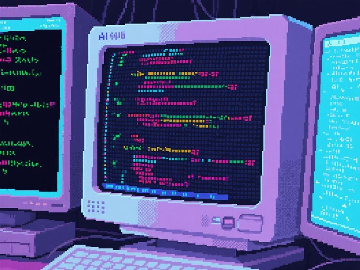

I'm not one of those people who started coding out of the womb. I started at 17-18(fyi:i turned 19 today) and i didn't go all in, i took it in small sips. i started with python which taught me the basics then i learned about this library called pygame which made me fall in love with coding, i used to spend like all my free time even weekends coding up my own little games with documentation on a tab in the browser. After that, i just messed around and learned to automate the boring stuff and i learned command line and installed Linux, next, i started learning web scraping and made some projects(i didn't know even basic html and css) then i started to learn html&css and after that came cs50 which taught me C, SQL, HTML, CSS, JS. Im about to finish it, it's been very rewarding.